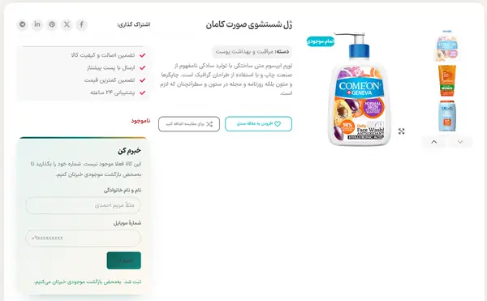
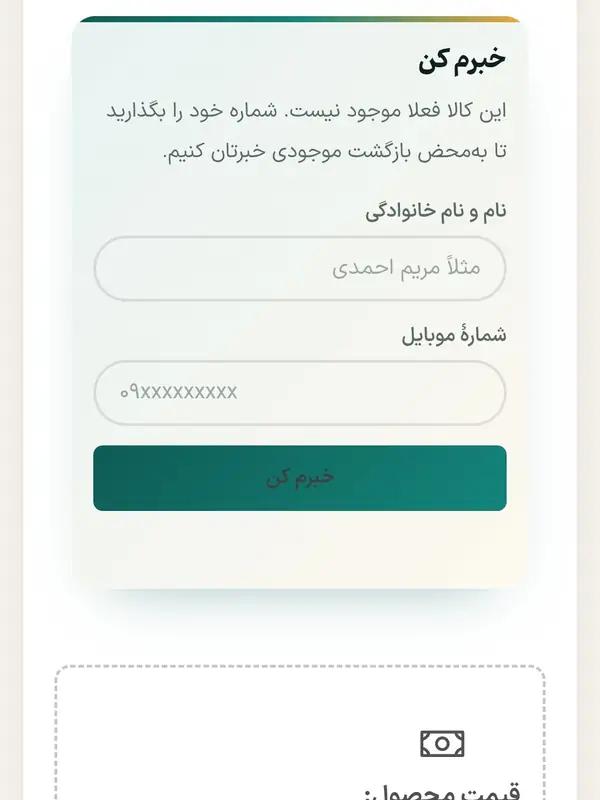
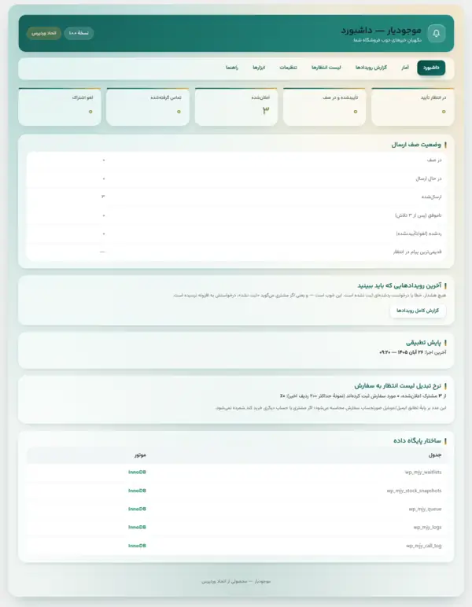
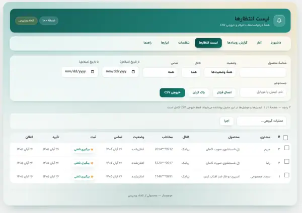
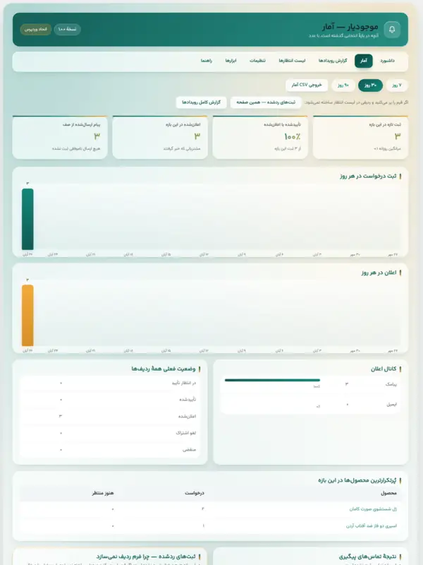
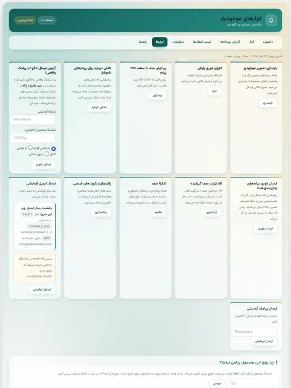
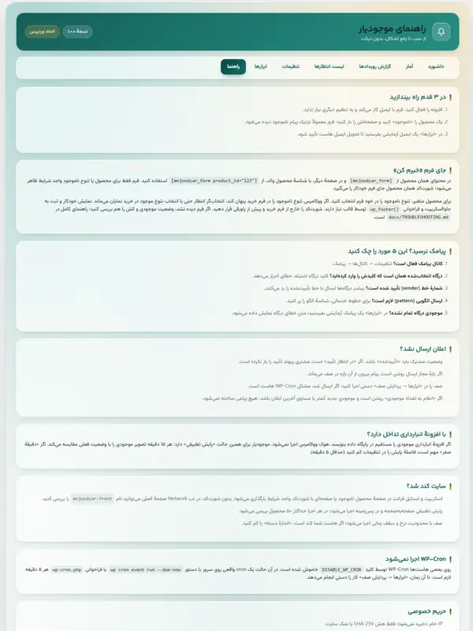
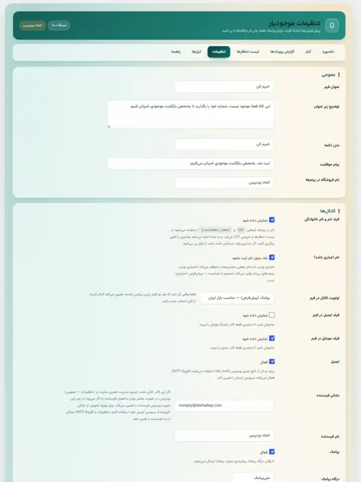
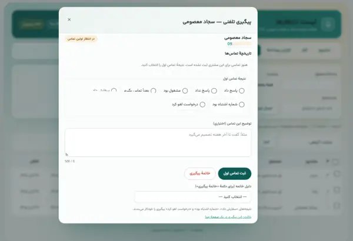
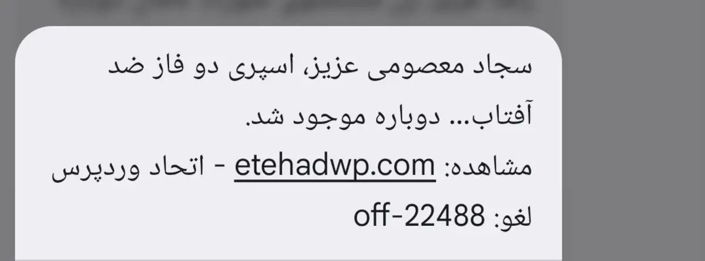

صف با محدودیت نرخ
ارسالها در پسزمینه و پلهپله؛ هیچ صفحهای وسط کار قفل نمیکند و درگاه بلاک نمیشود.
افزونهٔ ووکامرس · برای فروشگاههای ایرانی
موجودیار فرم «خبرم کن» را فقط روی صفحهٔ همان محصول ناموجود میگذارد. روی بقیهٔ سایت، صفر بایت. و وقتی کالا برگشت، به تعداد واحدهایی که برگشته پیامک میرود — از قدیمیترین منتظر.
ژل شستشوی صورت کامان
همهٔ این عددها از tests/queries.php و docs/PERFORMANCE.md میآیند، در محیط آزمون گرفته شدهاند و خودتان میتوانید بازتولیدشان کنید.
۰۱ مسیر
روی صفحهٔ محصول ناموجود، و برای هر تنوع جداگانه. روی هیچ صفحهٔ دیگری نه فایلی، نه اسکریپتی.
نام و شمارهٔ موبایل؛ همان نام در پیامک میآید، نه «همراه گرامی».
هوکهای ووکامرس بهعلاوهٔ پایش تطبیقی هر ۱۵ دقیقه؛ موجودیای که با اکسل یا ERP عوض شده هم از دست نمیرود.
۵ واحد برگشت؟ ۵ نفر اول خبر میشوند. ۳ واحد دیگر؟ ۳ نفر بعدی.
۰۲ امکانات
ارسالها در پسزمینه و پلهپله؛ هیچ صفحهای وسط کار قفل نمیکند و درگاه بلاک نمیشود.
ملیپیامک (ساده و الگو)، کاوهنگار، آیپیپنل، و یک درگاه عمومی REST برای بقیه.
هوک ووکامرس برای تغییرهای عادی، پایش هر ۱۵ دقیقه برای تغییرهایی که از اکسل، ERP یا SQL مستقیم آمدهاند.
به تعداد واحدهای برگشته اعلان میرود، از قدیمیترین منتظر. لیست هزارنفره با ۲ واحد موجود، هزار پیامک نمیفرستد.
داشبورد، لیست انتظار، آمار، پیگیری تلفنی مرحلهای، ابزارها و گزارش رویدادها.
هر ردیف یک توضیح فارسی «چه شد و چه کار کنم»، و متن خام پاسخ درگاه زیرش.
۰۳ مقایسه
همان کار، دو روش. هر ردیف به چیزی اشاره میکند که در همین صفحه نشان داده شده است.
| کار | پیگیری دستی | موجودیار |
|---|---|---|
| ثبت درخواست مشتری | مشتری پیام میدهد؛ یک نفر دستی وارد میکند | فرم روی صفحهٔ همان محصول، خودکار ثبت میشود |
| بار روی صفحات دیگر | — | ۰ فایل، ۰ کوئری |
| چه کسی خبردار میشود | هر کسی که اول جواب داده | قدیمیترین منتظر، به تعداد واحدهای برگشته |
| تغییر موجودی از اکسل یا ERP | تا کسی دستی چک نکند، دیده نمیشود | هوک ووکامرس + پایش هر ۱۵ دقیقه |
| ارسال ناموفق | معمولاً معلوم نمیشود | گزارش رویدادها با متن خام درگاه |
| سابقه و خروجی | بستگی به دفتر یا اکسل شما دارد | جدول انتظار با تاریخ شمسی و خروجی CSV |
| مسیر پیامک | — | از فروشگاه شما مستقیم به درگاه خودتان |
۰۴ تصویرها
این تصویرها از یک نصب واقعی گرفته شدهاند و دادههایشان واقعی است. روی هرکدام بزنید تا در اندازهٔ کامل ببینید.

نمای کامل
نمای کامل
نمای کامل
نمای کامل
نمای کامل
نمای کامل
نمای کامل
نمای کامل
نمای کامل
نمای کامل۰۵ سازگاری
هر جا تست کردهایم، نسخهاش اینجاست. هر جا تست نکردهایم، همانجا هم میگوییم — ولی جدولِ «نمیدانیم» نمیچینیم.
PHP 8.4، وردپرس 5.x و سایت چندزبانه آزمون نشدهاند. روی هاست خودتان امتحان کنید — اگر جایی گیر کرد، «گزارش رویدادها» میگوید چرا و پشتیبانی هم هست. ۲۸ بررسی دروازهٔ انتشار روی ۷.۴.۳۳ و ۸.۳.۳۳ اجرا شده است.
۰۶ نصب
فایل zip را از پیشخوان، «افزونهها ← افزودن ← بارگذاری افزونه» بریزید.
جدولهای InnoDB در دیتابیس خودتان ساخته میشوند؛ داده به جای دیگری نمیرود.
یکی از چهار درگاه را انتخاب و کلیدش را وارد کنید؛ نتیجهٔ هر ارسال در «گزارش رویدادها» دیده میشود.
۰۷ دمو
همان دموی کامل: شش سناریو، جدول انتظار، صف، خروجی CSV و پیامک نمونه. همهچیز داخل مرورگر میماند — نه شبکه، نه ذخیرهسازی.
۰۸ سؤالها
یک zip در پیشخوان؛ بدون Composer و بدون build. اگر پیامک وصل نشد، «گزارش رویدادها» میگوید چرا.
فرم روی قلاب استاندارد ووکامرس مینشیند؛ اگر قالب شما آن را حذف کرده، در مستندات راه جایگزین هست.
فعلاً فقط صفحهٔ محصول؛ شورتکد آزاد در نسخهٔ بعد.
نه؛ تأیید دومرحلهای هست ولی پیشفرض خاموش است.
روی ۷.۴.۳۳ و ۸.۳.۳۳ تست شده؛ PHP 8.4 آزمون نشده.
در جدولهای خود دیتابیس شما، فقط InnoDB. حذف افزونه دادهها را پاک نمیکند مگر خودتان روشن کنید.
نه. از فروشگاه شما مستقیم به درگاه خودتان.
ابزار «آزادسازی صف» ردیف رهاشده را برمیگرداند؛ اجرای بعدی صف هم خودکار این کار را میکند.
پاسخ اولیهٔ پشتیبانی حداکثر ۲۴ ساعت کاری؛ هدف ۴ ساعت.